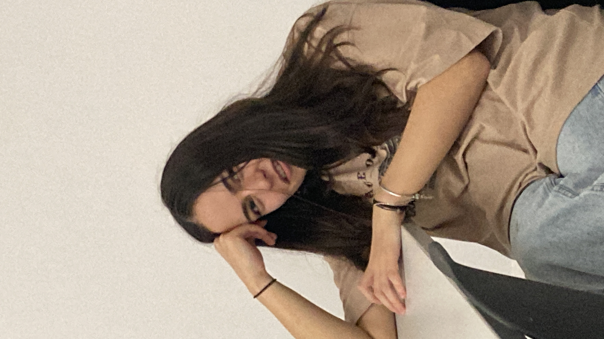

19 ianuarie 2024
Căminul Andrei Mureșanu
💜 Te iubesc pentru că mi-ai oferit privilegiul de a o cunoaște pe Ioana 💜
Amândoi reținem cu ușurință momentele de “wtf”. Sunt momente fine, in care ușor ușor ies la iveala micile trăsături native ale caracterului nostru. E ciudat, e
drăguț si câteodată cringe. Dar e atât de frumos sa vezi cum persoana pe care o iubești cel mai mult se deschide fata de tine. Cum își lasă barierele. Cum
imărtaseste cu tine cel mai de preț lucru: pe ea însăși. Unele cupluri se despart la aceste scăpări si deschidere, si nu pot decât sa ma întreb: de ce, când eu
stau, zi de zi, si te admir pentru energia, vibrația si natura ta.